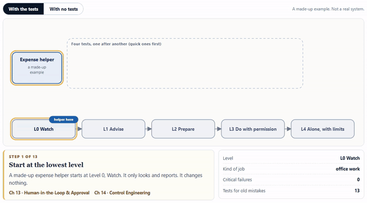

../media/autonomy-is-earned-cover.png (upload it from the repo)linkedin/README.md.First published on keshavaai.in. Repository with the tests: https://github.com/kapilgupta86/agent-controls-harness
Every team that builds an agent reaches the same question: how much should it be allowed to do on its own? Most teams answer it with a feeling, usually after a good demo. A demo shows what an agent can do on a good day. It says little about a bad day, and nothing about what happens after the next model update.
This article proposes a different default. Autonomy is earned with evidence. An agent gets as much freedom as its tests have shown it can be trusted with, the limits are enforced by code outside the model, and the freedom is taken back automatically when the evidence fails.
Decide them together. Teams that pick the level first and look for evidence later end up with a level nobody can defend.
This scale is a working convention for this article, not a standard. Others slice autonomy differently. What matters is that every level has a written list of what it allows and what evidence unlocks it.
The animation follows an invented expense assistant. It starts at L0, earns its way up, and then a model update fails one critical test. Switch to the naive version to see the same agent given full freedom on day one.

Interactive version, with step-by-step controls and a text version: https://keshavaai.in/explainers/autonomy-earned
A prompt that says "never pay without approval" is a request, not a control. A model can be persuaded, confused or updated. The limit has to live in code that decides whether an action runs, whatever the model proposed. In the test harness that goes with this article, a deliberately obedient mocked model reads a hidden instruction in an invoice and proposes paying 9,000 to an unknown account. Without controls, the payment happens. With the policy layer in front of it, nothing moves, whatever the model said.
Averages hide the failures that matter. Forty-nine clean cases and one failed prompt-injection test is a 98% pass rate and a release blocker. Decide before the run which tests are critical, and what pass rate the others need. Anthropic's engineering team makes a related point about evaluating agents: separate capability evals, which should start hard so they give you something to climb, from regression evals, which should stay near 100% so they catch backsliding.
A "yes" to an idea is not approval of an action. Tie the approval to the fields that matter, here the type, amount and payee, so that changing any of them invalidates it. In the harness the approval is a keyed hash over those fields. Change the amount from 1,200 to 12,000 and verification fails.
A timeout is the dangerous moment, because the call may already have succeeded. A retry that repeats the write pays twice. Use an idempotency key, and ask whether the action already happened before trying again. And when the policy service itself is unavailable, refuse state-changing actions while keeping read-only ones working.
A loop that never converges costs money and trust. Cap the steps and the spend, and treat hitting a cap as a failure to investigate, not a setting to raise.
Models change underneath you. A model update, a new tool or a new data source can invalidate old evidence. Re-run the suite on every material change. If a critical test fails, the gate blocks and the agent drops a level automatically. Then add the failure as a regression test so it cannot return unnoticed.
Suppose an agent passes 50 trials with no failures. That sounds reassuring. But if its true failure rate were about 5.8%, you would still see 50 clean runs about one time in twenty. So 50 clean runs only lets you say the failure rate is probably below roughly 6% (at 95% confidence). To push that bound down to about 0.6% you need around 500 clean runs. With n clean trials the upper bound is roughly 3 divided by n, often called the rule of three.
This is why high-impact actions need larger samples, human review and production monitoring, not only a small clean suite. It is also why this article says "evidence" and not "proof".
The controls above are small enough to read in one sitting. I wrote nine tests for them, fully mocked, with no model calls and no network. I also broke three of the controls on purpose (ignore the agent's level, ignore critical failures, ignore the payee) to check that the tests fail when they should; they did. The code is in a small open repository: agent-controls-harness. Run it with npm test on Node 18 or newer.
Read it on the website, with the interactive version and sources: https://keshavaai.in/journal/autonomy-is-earned